- アニメーションイベントについて
- maxscriptについて
4.1 アニメーションイベント
4.2 アニメーションキーの設定
4.3 当たり判定の発生
- //Player.h
- class Player : public IGameObject
- {
- public:
- .
- .
- .
- /// <summary>
- /// ダウンステートの遷移処理。
- /// <summary>
- void ProcessDownStateTransition();
- /// <summary>
- /// クリアステートの遷移処理。
- /// <summary>
- void ProcessClearStateTransition();
- // アニメーションイベント用の関数。
- void OnAnimationEvent(const wchar_t* clipName, const wchar_t* eventName);
- //アニメーション。
- enum enAnimationClip {
- enAnimationClip_Idle, //待機アニメーション。
- .
- .
- .
- };
- //Player.cpp/Player::Start()
- bool Player::Start()
- {
- //アニメーションをロードする。
- .
- .
- .
- //各サウンドをロードする。
- g_soundEngine->ResistWaveFileBank(0, "Assets/sound/magic.wav");
- g_soundEngine->ResistWaveFileBank(3, "Assets/sound/slash.wav");
- g_soundEngine->ResistWaveFileBank(7, "Assets/sound/hit_pitch.wav");
- //アニメーションイベント用の関数を設定する。
- m_modelRender.AddAnimationEvent([&](const wchar_t* clipName, const wchar_t* eventName) {
- OnAnimationEvent(clipName, eventName);
- });
- m_game = FindGO<Game>("game");
- return true;
- }
- //Player.cpp
- void Player::OnAnimationEvent(const wchar_t* clipName, const wchar_t* eventName)
- {
- //キーの名前が「attack_start」の時。
- if(wcscmp(eventName, L"attack_start") == 0)
- {
- //攻撃中にする。
- m_isUnderAttack = true;
- }
- //キーの名前が「attack_end」の時。
- else if(wcscmp(eventName, L"attack_end") == 0)
- {
- //攻撃を終わる。
- m_isUnderAttack = false;
- }
- }
- void Player::Render(RenderContext& rc)
- {
- //モデルを描画する。
- m_modelRender.Draw(rc);
- }
- //Player.cpp/Player::Attack()
- void Player::Attack()
- {
- //攻撃中でないなら、処理をしない。
- if(m_playerState != enPlayerState_Attack)
- {
- return;
- }
- //攻撃判定中であれば。
- if(m_isUnderAttack == true)
- {
- //攻撃用のコリジョンを作成する。
- MakeAttackCollision();
- }
- }
- //Player.cpp/Player::MakeAttackCollision()
- void Player::MakeAttackCollision()
- {
- //コリジョンオブジェクトを作成する。
- auto collisionObject = NewGO<CollisionObject>(0);
- Vector3 collisionPosition = m_position;
- //座標をプレイヤーの少し前に設定する。
- collisionPosition += m_forward * 50.0f;
- //球状のコリジョンを作成する。
- collisionObject->CreateSphere(collisionPosition, //座標。
- Quaternion::Identity, //回転。
- 70.0f //半径。
- );
- collisionObject->SetName("player_attack");
- }
4.4 まとめ
- アニメーションイベントを使用すれば、アニメーション再生中の任意のタイミングで処理を実行できる。
4.5 Tips maxscript
この章で学ぶこと
では、「Player」の通常攻撃を実装していきたいと思います。
実装にあたって、「アニメーションイベント」というものを活用します。
アニメーションイベントとは、アニメーション再生中の特定のタイミングで、任意の処理を実行させるというものです。
アニメーションイベントとは、アニメーション再生中の特定のタイミングで、任意の処理を実行させるというものです。
「Player」の通常攻撃のアニメーションは以下のようになっています。
一方で通常攻撃の当たり判定を発生させたいタイミングは、以下のような剣を振り回しているタイミングです。
そのような時に使用するのが、アニメーションイベントです。アニメーションイベントを使用して、「剣の振り始め」から「剣の振り終わり」まで攻撃判定を発生させるようにしましょう。
ではまず、3dsmaxでアニメーションキーの設定を行いましょう。
3dsmaxを開いて、Assets/modelData/humanのhuman_attack.fbxを読み込んでください。

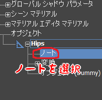
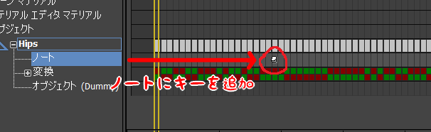

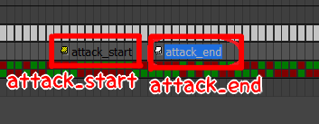

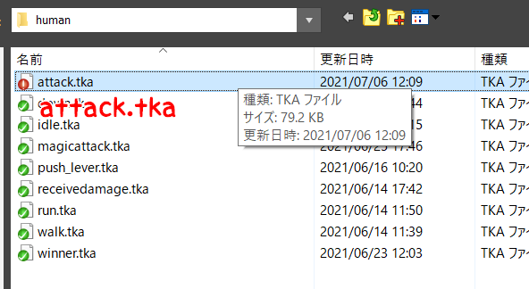
3dsmaxを開いて、Assets/modelData/humanのhuman_attack.fbxを読み込んでください。
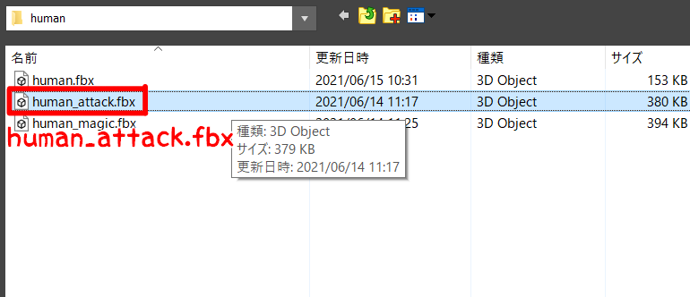
3ds Max下部の「アニメーションを再生」というところを選択すると、「攻撃アニメ―ション」が再生されると思います。
それでは、この「攻撃アニメーション」の、「剣の振り始め」と「剣の振り終わり」に「アニメーションキー」を設定していきましょう。
まず、「ルートボーン」である、「Hips」を選択してください。
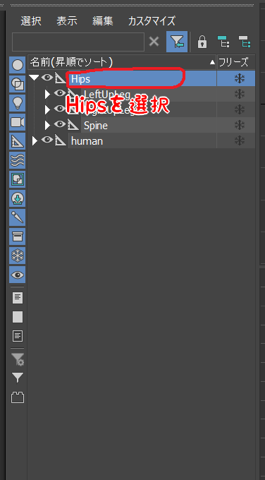
次に、3ds Max上部の「グラフエディタ」の「トラックビュー ドープシート」を選択してください。
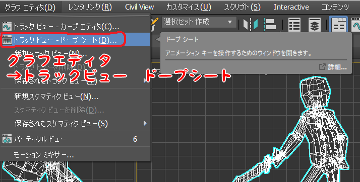
次に、このウィンドウ上の「Hips」を選択して、「編集」→「ノート トラック」→「追加」を選択してください。
そうすると、「Hips」に「ノート」という項目が追加されていると思います。
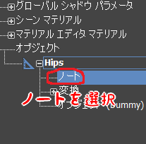
次に、「キー」→「キーを追加/除去ツール」を選択してください。これで「キー」を設定できるようになりました。
では、実際にアニメーションキーを設定していきましょう。まずは剣を振り始めるタイミングに設定します。
まず、追加された「ノート」を選択して、「ノート」項目の「19フレーム」付近をクリックしてください。 そうすると、このように「キー」が追加されます。
まず、追加された「ノート」を選択して、「ノート」項目の「19フレーム」付近をクリックしてください。 そうすると、このように「キー」が追加されます。
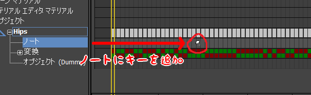
この追加した「キー」を右クリックすることで、「キーを編集」することができます。右クリックして、以下のようにキーを編集してください。
次に、剣を振り終わるタイミングにアニメーションキーを設定します。
以下のようなキーを追加してください。
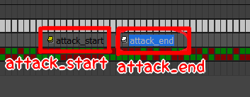
次に、tkExporterを起動して、「Animation」項目の「start frame」と「end frame」を下記のように設定してください。
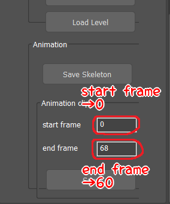
最後に、「Save」から、Assets/animData/humanのattack.tkaを選択して保存してください。
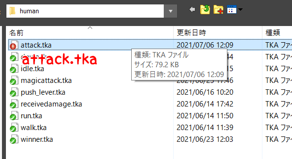
次に、設定したアニメーションキーを使用して、通常攻撃の当たり判定の発生をしていきましょう。
まず、Player.hにアニメーションイベント用の関数を宣言してください。
次に、この関数をModelRenderに設定し、関数の中身を記述します。
「m_isUnderAttack」がtrueの時、攻撃中ということです。
では、最後に「Attack関数」と「MakeAttackCollision関数」に下記のコードを追加してください。
出来たら、実行してみてください。Yボタンで通常攻撃です。
以下のように当たり判定が発生しているでしょうか。
以下のように当たり判定が発生しているでしょうか。
今までtkmファイル出力、アニメーションキーの出力など、様々な場面でtkExporterを使用しました。
これは、「maxscript」と呼ばれるものです。
「maxscript」とは、3dsmaxで実行可能なスクリプト言語です。
maxscriptにより、3dsmaxにユーザーインターフェースを追加したり、制作・設定したものを外部に出力したりできます。
3DS MAX ヘルプ
3DS MAX ヘルプ
ただゲーム制作をするだけでなく、ゲーム制作に必要なツール制作も就活でアピールとなるポイントです。余裕のある人は調べてみてください。
また、3dsmaxと同じ3DCGソフトの「Blender」では、スクリプト言語として、「Python」が実行可能となっています。
また、3dsmaxと同じ3DCGソフトの「Blender」では、スクリプト言語として、「Python」が実行可能となっています。